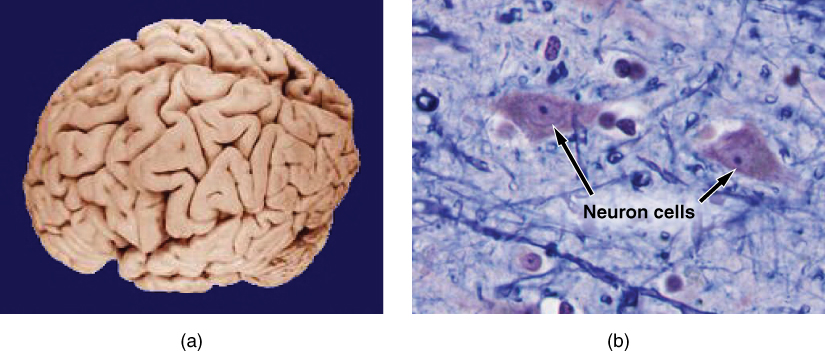

1.1 Overview of Anatomy & Physiology
Human anatomy is the study of the body’s structures. Some of these structures are very small. And they can only be seen and studied with a microscope. Other larger structures can be seen, measured, and weighed. The word “anatomy” comes from a Greek root that means “to cut apart.” Human anatomy was first studied by looking at the outside of the body. And seeing wounds of soldiers and other injuries. Later, doctors were allowed to dissect bodies of the dead to improve their knowledge. The body structures are cut apart to see them and their relationships to each other. Dissection is still used in medical schools, anatomy courses, and in pathology labs. Imaging techniques have been developed to see structures in living people. These techniques allow doctors to see structures inside the living body.
Anatomy has areas of specialization. Gross anatomy is the study of the larger structures of the body. Macro- means “large.” Micro- means “small.” Microscopic anatomy is the study of structures that can be seen only with microscope. Microscopic anatomy includes cytology and histology. Cytology is the study of cells and histology is the study of tissues. As technology improves, we can see smaller and smaller structures of the body.
Gross and Microscopic Anatomy

(a) Gross anatomy looks at large structures such as the brain. (b) Microscopic anatomy can look at the same structures, though at a smaller scale. This is a
micrograph of nerve cells from the brain.
(credit a: “WriterHound”/Wikimedia Commons; credit b: Micrograph provided by the Regents of University of Michigan Medical School © 2012)Regional anatomy studies the interrelationships of the structures in a specific body region. Systemic anatomy studies structures that work together to with a unique function.
Physiology is about function. Human physiology studies the chemistry and physics of body. Much of the study of physiology centers on homeostasis. Homeostasis is the steady internal conditions of living things. The study of physiology includes observation. Well-designed laboratory experiments help advance physiology knowledge.
Physiologists usually specialize in a particular branch of physiology. For example, neurophysiology is the study of the brain, spinal cord, and nerves and how these work together. Physiologists may work from the organ level to the molecular level.
Form is related to function. For example, the thin flap of your eyelid can snap down to clear away dust particles. And almost instantly it slides back up to allow you to see again. The function of these nerves and muscles relies on the interactions of specific molecules and ions.
All this will make more sense if you relate the form of the structures to their function. It can be frustrating to to study anatomy without an understanding of physiology.
English Glossary
- anatomy: science that studies the body’s structures
- microscope: an instrument that uses a lens to make very small objects larger so that they can be seen by the eye
- measured: size or amount of something
- weighed: amount of weight of something
- injury: any damage to the body
- dissect: to cut open or apart in order to examine.
- improve: to make better
- dissection: the act of dissecting or fact of being dissected
- pathology: the scientific study of the causes, nature, and results of bodily disease
- imaging: the process of capturing, storing and showing an image on a computer screen
- specialization: the process of becoming an expert in a particular area of work, study or business
- gross anatomy: The study of the organs, parts, and structures of a body that are visible to the naked eye
- microscopic anatomy: study of the structure of cells, tissues, and organs of the body as seen with a microscope
- cytology: branch of biology concerned with the structures and processes internal to cells
- histology: scientific study of the microscopic structure of organic tissue
- micrograph: a drawing or photograph of something as it is seen through a microscope
- regional anatomy: study of anatomy based on regions or divisions of the body
- interrelationship: way in which two or more things or people are connected and affect each other
- specific: connected with one particular thing only
- systemic anatomy: study of the structures of a specific body systems
- unique: being the only one of its type
- physiology: science that studies the chemistry, biochemistry, and physics of the body’s functions
- function: a special activity or purpose of a person or thing
- homeostasis: physiological system will try to remain more or less stable
- neurophysiology: study of the normal functions of the nervous system
- physiologist: scientist who studies physiology
- form: structure or shape
- flap: a thin or flat piece that is attached only at one edge and hangs loose
- eyelid: a fold of skin that can be opened or shut over the eyeball
- snap: to cause to suddenly close or open
- particle: a tiny amount or small piece
- instantly: at once; without delay; immediately
- interaction: two things have an effect on each other
- ion: an atom or group of atoms that has an electrical charge
English-Mongolian
- anatomy: анатоми
- microscope: микроскоп
- measured: хэмжсэн
- weighed: жинтэй
- injury: гэмтэл
- dissect:
- improve: сайжруулах
- dissection:
- pathology: эмгэг
- imaging: дүрслэл
- specialization: мэргэшсэн
- gross anatomy: Нийтлэг анатоми
- microscopic anatomy: бичил харуурын анатоми
- cytology: цитологи
- histology: гистологи
- micrograph:
- regional anatomy: бүс нутгийн анатоми
- interrelationship: харилцан уялдаа холбоо
- specific: тодорхой
- systemic anatomy: системийн анатоми
- unique: өвөрмөц
- physiology: физиологи
- function: функц
- homeostasis:
- neurophysiology: невропиологи
- physiologist: физиологич
- form: хэлбэр
- flap: хийсвэр
- eyelid: зовхи
- snap: гэнэт
- particle: бөөм
- instantly: тэр даруй
- interaction: харилцан үйлчлэл
- ion: ион
Source: Translate.Google.com
English-Russian
- anatomy: анатомия
- microscope: микроскоп
- measured: измеренный
- weighed: взвешенный
- injury: травма
- dissect: рассекать
- improve: улучшать
- dissection: рассечение
- pathology: патология
- imaging: изображений
- specialization: специализация
- gross anatomy: грубая анатомия
- microscopic anatomy: микроскопическая анатомия
- cytology: цитология
- histology: гистология
- micrograph: микроснимок
- regional anatomy: региональная анатомия
- interrelationship: соотнесенность
- specific: конкретный
- systemic anatomy: системная анатомия
- unique: уникальный
- physiology: физиология
- function: функция
- homeostasis: гомеостаз
- neurophysiology: нейрофизиология
- physiologist: физиолог
- form: форма
- flap: створка
- eyelid: веко
- snap: щелчок
- particle: частица
- instantly: немедленно
- interaction: взаимодействие
- ion: ион
Source: Translate.Google.com